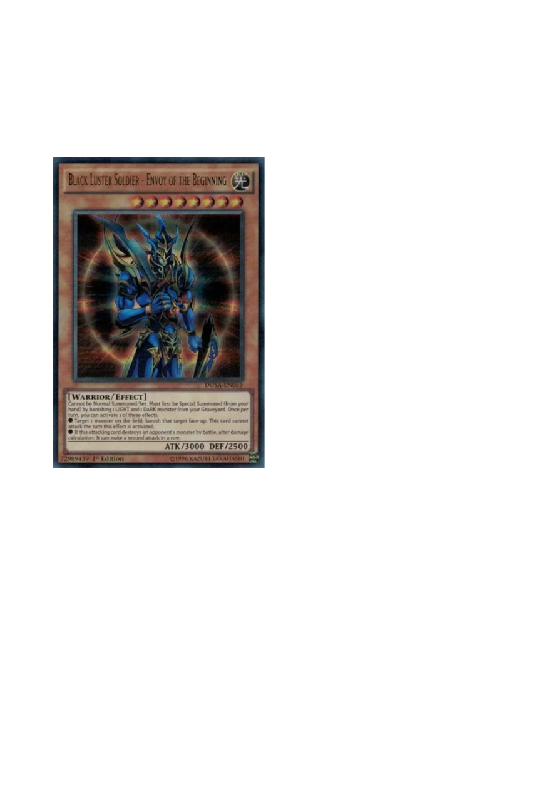
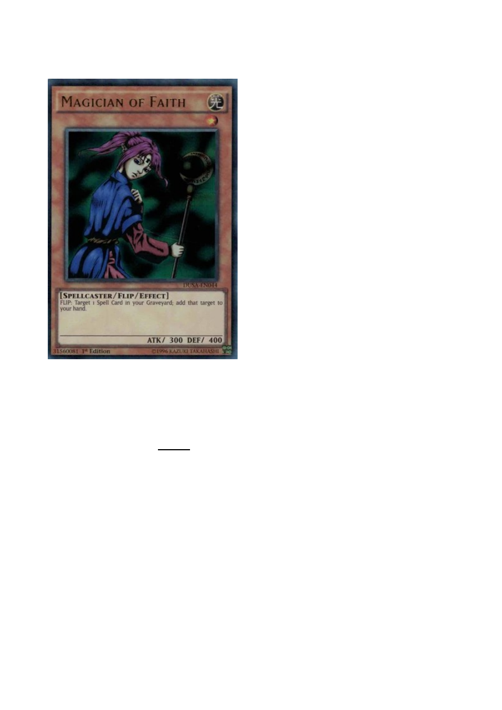
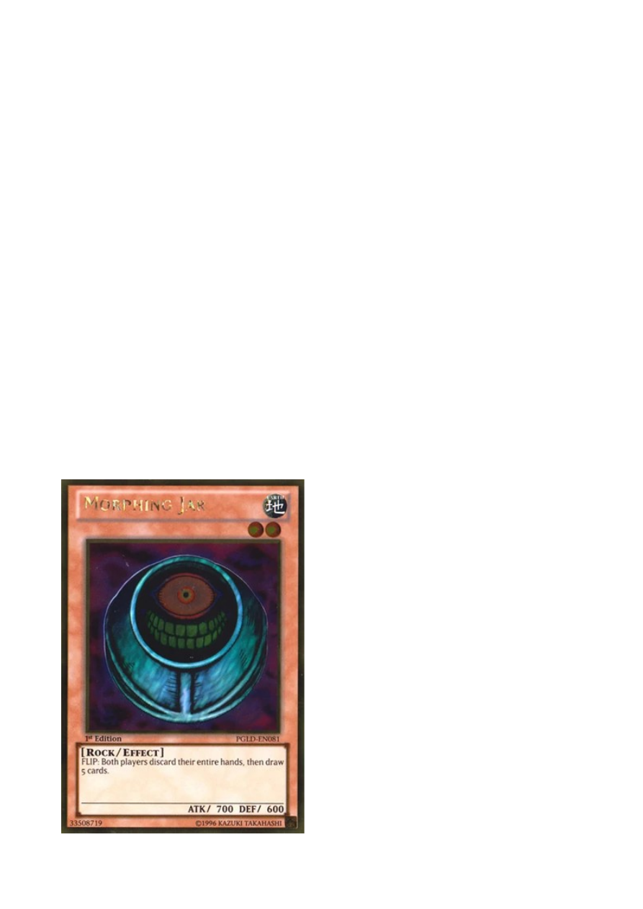
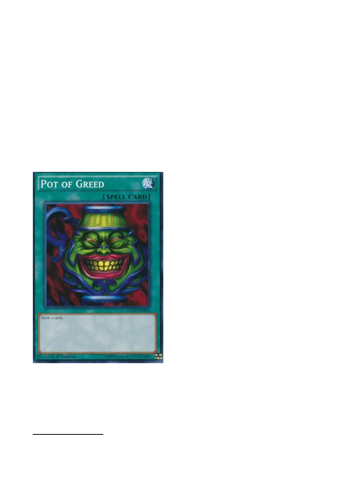
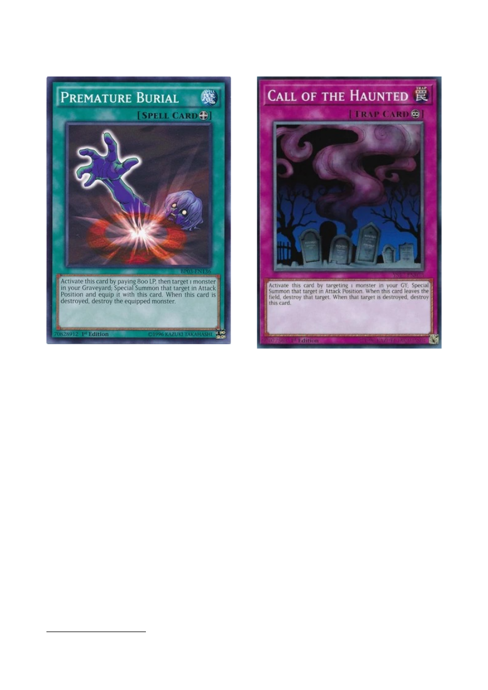
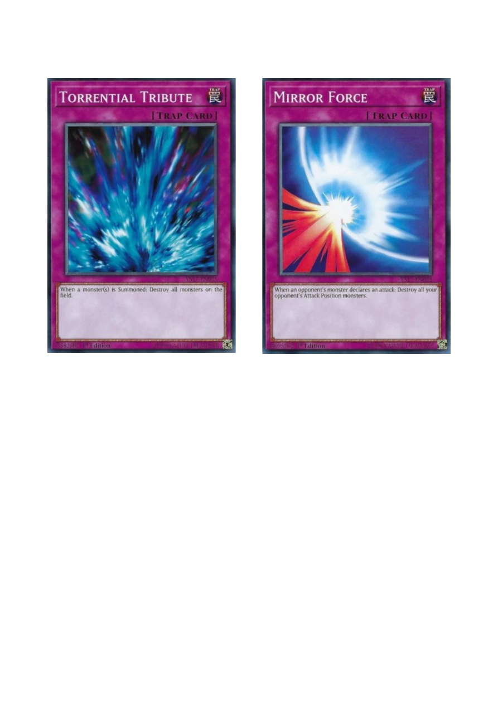
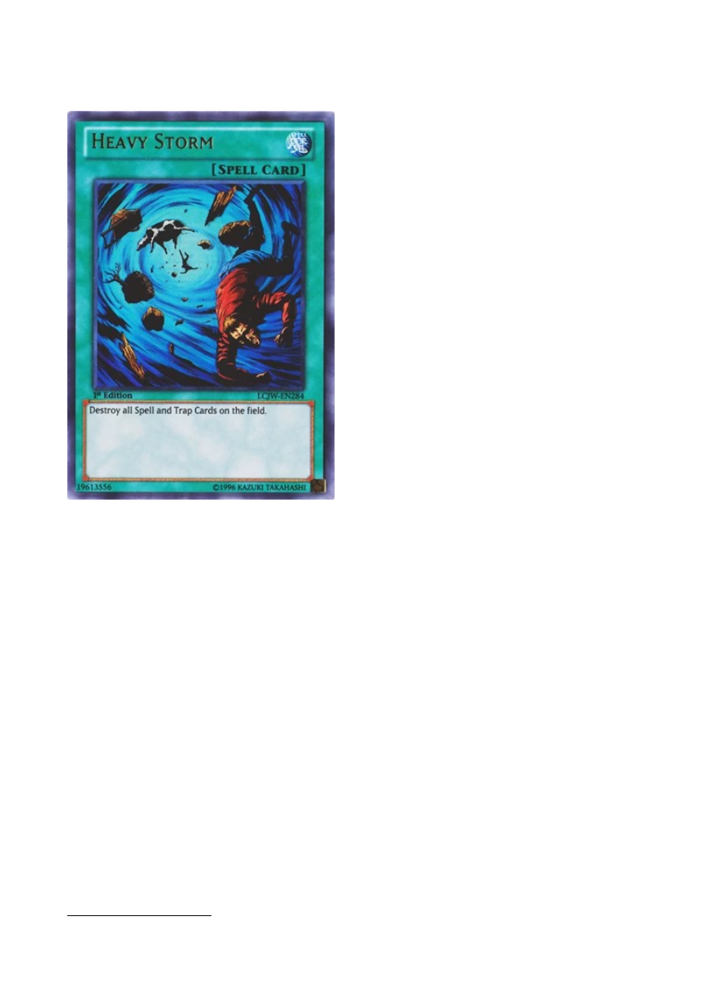

NEKAJ O KOZAH
Živjo, danes je zmanjkalo interneta, zato sem se odločil napisati nekaj na temo
Goat formata. Zadnje čase s kolegi radi igramo tale Goat format, pred kratkim
smo tudi poskušali izvesti nek mini Goat side event na Viču, a udeležba je bila
slaba (beri: udeležili smo se le pobudniki sami). Upam, da bom s tem pisanjem
uspel prepričati vsaj koga izmed vas, da se nam naslednjič pridruži ali pa da se
samo s kolegi pomeri v igranju Goat Formata. :)
A kaj sploh je »Goat Format«?
(Disclaimer: na internetu je mogoče najti že dosti člankov, ki opisujejo famozni Goat format, in če znate
angleško in vas stvar zanima, priporočam, da stvar preberete kar tam. Namen tega pisanja ni napisati boljši
artikel, ampak predstavitev Goat formata predvsem mlajšim igralcem v skupini, pa tudi tistim, ki za to čudo
še nikdar niste slišali in bi radi prebrali nekaj v slovenščini.
(((
In pa seveda pregnati dolgčas, ki nastane ob
pomanjkanju interneta.)))
)
**Sam igram goate le nekaj mesecev, zato je moje znanje na to temo povprečno, a vseeno, za 1 člančič bo**
Torej, začnimo na začetku; Goat Format je oznaka za obdobje nekje okoli 2005,
ko so YGO sceno dominirali tako imenovani Goat Control decki. Format je svoje
ime dobil po karti
Scapegoat, ki so jo Goat Control igralci uporabljali v kombinaciji
s karto
Metamorphosis, ta pa je omogočila priklic močnega Thousand-Eyes
Restrict (kratica zanj je TER) iz Extra (takrat imenovanega Fusion) decka.
V tem obdobju so se igrali tudi drugi decki (Zombie, Beastdown, Monarch,
EmptyJar), ampak ob imenu Goat Format navadno najprej pomislimo na mirror
match dveh Goat Control deckov (na kratko »goat mirror«).
Igra je potekala počasneje v tistih časih. Vsak duel je lahko trajal okoli 20 minut
ali več, in se izjemno redko zaključil po dveh ali treh potezah, kot je to v navadi
danes. Razlog za to tiči v
card pool-u
1
tistega časa, ki je bil seveda manjši kot
danes, karte pa niso omogočale takšne eksplozivnosti in zasuvanja polja z
močnimi pošastmi in ostalimi zverinami, ki jih poznamo danes.
Meni osebno je Goat Format všeč, ker se ne spreminja (enkrat nabaviš karte in jih
imaš za vedno, ne rabiš kupovati novih, dragih kart, da lahko ostaneš v koraku z
meto) oziroma se spreminja zelo počasi, prav tako pa mi je način igre dosti ljubši
v primerjavi z današnjim. Daljši dvoboji, v katerih imata oba igralca svoje
možnosti (interaktivnost med igralcema - nikoli ne boš izgubil v drugem krogu,
1
Card pool: vse obstoječe in legalne karte v tistem času.
ker je nasprotnik potegnil zelo močno roko in Vanity’s Emptiness) ter večji
poudarek na mentalni igri (blefiranju z lastnimi kartami, branju nasprotnika -
ugotavljanju, kaj bi lahko bila karta, ki jo je npr. setal nasprotnik, kaj lahko drži v
roki glede na to, kako je pravkar odigral, itd.) sta le dve od stvari, ki jih format
ponuja in za katere mislim, da so se danes precej izgubile.
Nekateri igralci celo prisegajo, da igranje Goat Formata pomaga pri vsakem
aspektu Yu-Gi-Oh-a in vam pomaga, da postanete boljši igralec na sploh.
Primer deck liste goat control decka iz leta 2005 ter Kris Peroviceva lista iz leta 2014, s
katero je dosegel rezultat 21 – 1 na Goat Format War League 2014.
Goat Control
Nareg Torossian
Location:
2005 SJC Indianapolis
Place: 1st
Format:
Advanced
Main Deck
Side Deck
1
Airknight Parshath
1
Asura Priest
1
Black Luster Soldier - Envoy of the Beginning
1
Breaker the Magical Warrior
2
D.D. Assailant
1
D.D. Warrior Lady
1
Jinzo
1
Kycoo the Ghost Destroyer
2
Magician of Faith
1
Sinister Serpent
1
Tribe-Infecting Virus
2
Tsukuyomi
Monsters [15]
1
Book of Moon
1
Delinquent Duo
1
Graceful Charity
1
Heavy Storm
1
Lightning Vortex
2
Metamorphosis
1
Mystical Space Typhoon
2
Nobleman of Crossout
1
Pot of Greed
1
Premature Burial
3
Scapegoat
1
Snatch Steal
1
Swords of Revealing Light
Spells [17]
1
Call of the Haunted
1
Blade Knight
1
Bottomless Trap Hole
1
Chain Disappearance
1
Don Zaloog
2
Dust Tornado
1
Exiled Force
1
King Tiger Wanghu
1
Mobius the Frost Monarch
1
Mystic Swordsman LV2
1
Reinforcement of the Army
1
Royal Decree
1
Sakuretsu Armor
1
Smashing Ground
1
Spirit Reaper
Side Deck [15]
EXTRA DECK
3
Dark Balter the Terrible
3
Dark Blade the Dragon Knight
3
Dark Flare Knight
1
Darkfire Dragon
1
Dragoness the Wicked Knight
1
Fusionist
2
Gatling Dragon
1
Giltia the D. Knight
3
Ojama King

Ko sem kateremu od svojih prijateljev prvič kazal svoj Goat deck, da bi jih uvedel
v igro in jim pred nos metal karte, sem se pri nekaterih kartah posebej ustavil in
to bom storil tudi tukaj - začnimo pri Monstrih:
Black Luster Soldier – Envoy of the Beginning
Najmočnejši monster, ki lastnoročno zmaga igre. Z njim je treba biti pazljiv;
nočemo ga priklicati, ko ima nasprotnik veliko možnosti, da nam ga uniči ali celo
vzame (npr. z Thousand-Eyes Restrictom ali Snatch Steal-om). Zato z njim
ponavadi čakamo, dokler je mogoče, in ko ga prikličemo, poskušamo zmagati že
v istem krogu. Naj še omenim, da se Magical Merchant igra le za to, ker je eden
izmed boljših LIGHT pošasti v card pool-u, in za priklic BLS-ja rabimo vsaj enega
LIGHT monsterja na pokopališču. (za DARK monstre nas ne skrbi, naj je večina
pošasti DARK).

Magician of Faith
Ko v goat mirrorju nekdo seta monstra, mora nasprotnik vedno pomisliti, da je
mogoče setan Magician of Faith. Njegov učinek je, da nam vrne Spell karto iz
groba v roko, pri tem pa ponavadi izbere enega izmed treh močnih spellov, ki so
med igralci dobili ime Trinity: Pot of Greed, Delinquent Duo, Graceful Charity. Več
o njih pozneje.

Sinister Serpent
»Ma zakaj se to
igra, saj nič ne
dela,« je pogosta
reakcija nekoga, ki
prvič vidi to karto
in ne pozna Goat
Formata - tudi
sam sem pomislil
tako. Stvar je v
tem, da se Sinister
vsak naš krog vrne
iz groba v roko,
kar pomeni, da ga
lahko vedno znova uporabimo za plačevanje raznih
cost-ov drugih kart
(najpogosteje se uporablja z Metamorphosis, saj je level 1 in ravno tako kot
scapegoat tokeni omogoča prklic TER-a).
Tsukuyomi

ali Book of Moon s 1100 napada :P. To je karta z veliko uporabami; naj omenim
nekatere:
- omogoča ponovno uporabo naših FLIP efektov, npr. Magical Merchanta ali
Magician of Faitha,
- lahko v bitki premaga veliko pošasti, ki imajo sicer večji napad od nje ampak
manjšo obrambo, saj jih ob priklicu postavi v Face-Down obrambni položaj,
- lastoročno lahko premaga nasprotnikovega TER-a,
- dobro sodeluje z našim TER-om: denimo, da imamo na polju TER-a, ki smo ga
priklicali prejšnjo rundo, in na njemu je že equipan nasprotnikov monster.
Nasprotnik ima na polju še enega monstra ter mi imamo v roki Tsukuyomi. Lahko
priličemo Tsukuyomi, setamo lastnega TER-a, in zaradi mehanik igre bo monster,
equipan nanj, poslan na pokopališče. Nato lahko TER-a nazaj obrnemo ter
uporabimo njegov efekt in equipamo še drugega nasprotnikovega monstra.
- še veliko drugih combotov, najdite jih sami ;).
Morphing Jar

Verjetno najbolj zanimiva karta v formatu. Omogoča celo košaro mentalnih igric,
blefiranja in razdira tudi najboljša prijateljstva. :D
Recimo, da ste sredi igre, uspelo vam je pridobiti nekaj prednosti: v roki držite
več kart kot jih ima nasprotnik, in nič hudega sluteči napadete njegovega
setanega monsterja. Niste dali dovolj pozornosti na to, da je nasprotnik skupaj z
monstrom setal tudi 2 spella ali trapa, ki jih je od prej držal v roki. Zakriti
monster je seveda Morphing Jar in sedaj se igra tako rekoč ponastavi in vaša
priigrana prednost je izgubljena.
Oglejmo si sedaj spelle in trape, in seveda se spodobi da začnemo pri tako
imenovanem
Trinity-ju.
- O Pot of Greedu ni potrebe zgubljati besed – ko ga vlečemo, ga skoraj vedno
takoj aktiviramo in gremo takoj v +1
2
= zastonj smo pridobili 1 karto več. Ostala
2 spella pa si zaslužita malo več pozornosti:
2
»+1« pomeni, da smo povečali svojo prednost v kartah za 1: to lahko pomeni, da imamo 1 karto več kot prej, ali pa,
da imamo enako kart kot prej, vendar ima nasprotnik 1 karto manj. V splošnem velja: več kart kot imamo v
primerjavi z nasprotnikom, lažje bomo zmagali.

- Graceful Charity sama po sebi ne naredi +1, ampak je ne glede na to močna
karta, saj nam omogoča, da vlečemo 3 nove karte, nato pa od vseh kart iz roke
odvržemo 2. Idealno je, da odvržemo Sinister Serpenta, ki se nam bo
itak
naslednji krog vrnil v roko, zato navadno čakamo, da ga vlečemo, preden
aktiviramo Charity. Charity navadno aktiviramo tudi, če nas nasprotnik pritiska, s
Charitijem želimo povleči karto, ki nas bo rešila iz dane situacije.

- zadnji del Trinity-ja je Delinquent Duo. Lahko bi rekli, da je karta zlobni dvojček
Pot of Greeda, saj namesto, da bi nam dala 1 karto več, nasprotniku dve vzame. A
ima nekaj slabosti v primerjavi z Loncem Pohlepa:
•
1. Patrick Hoban v svoji knjigi Road to the King trdi, da je boljše (bolj
optimalno) pridobiti svoje karte, kot jih odvzeti nasprotniku,
•
2. za aktivacijo karte moramo plačati 1000 življenjskih točk, kar ni tako
malo v Goat Formatu, kot bi si človek mislil v luči vseh Solemn Warningov in
Strikov, ki se danes igrajo,
•
3. če ima nasprotnik v roki Sinister Serpenta, ga bo v naslednjem krogu
dobil nazaj, in tako nismo šli v +1.
Scapegoat & Metamorphosis
Glavna naloga tega dvojca je, da z Metamorphosis-om žrtvujemo kozji žeton in
prikličemo TER-a ter z njim posesamo nasprotnikovo pošast. Scapegoati dobro
delujejo kot karta za blefiranje, saj so chainable in nam omogočajo neko mero
varnosti – nasprotnik mora ubiti vse 4 kozje žetončke, preden nas lahko napade v

življenjske točke. Če npr. prisilimo nasprotnika v to, da nam z Dust Tornadojem
uniči setane Scapegoate, jih chainamo
3
in smo zadovoljni sami s seboj.
Mystical Space Typhoon (in Dust Tornado)
Naj najprej omenim, da je MST bil na seznamu Omejenih in Prepovedanih kart
tistega časa, in sicer lahko se je igralo samo 1 izvod te karte. Največ koristi
dobimo iz MST-ja, če ga setamo in čakamo, da nam ga nasprotnik poskuša uničiti
z Breaker, the Magical Warrior-jem, Dust Tornado-jem ali lastnim MST-jem, nato
ga chainamo na eno izmed njegovih spell ali trap kart. Sam namen MST-ja pa je
izvorno to, da uniči Snatch Steal ali pa revival karti kot so Premature Burial in
COTH.
(za več teorije o MST-ju preberi članke na strani cardtraders.eu, avtor Matej Jakob)
3
»chainati« pomeni aktivirati efekt ali karto kot odgovor na nasprotnikovo aktivacijo efekta ali karte.

Premature Burial & Call of the Haunted (COTH)
Staple
4
karte, ki omogočajo ponovni priklic močne pošasti iz groba na polje.
Najbolje so seveda uporabljene, če jih uporabimo na Black Luster Soldierju. Prav
zato je tako pomembno čuvati MST, da uničimo eno od teh dveh kart, saj bi se v
nasprotnem primeru morali ponovno ubadati z že enkrat premaganim Black
Lusterjem, ki nam dela hude preglavice.
4
Staple karta v določenem formatu je karta, ki jo več ali manj igrajo vsi decki.

Torrential Tribute & Mirror Force
Staple karti z največjo uničevalno močjo v formatu. Ko enkrat aktiviramo eno
izmed teh kart, se moramo zavedati, da nasprotnik ve, da nimamo še ene, saj so
obe legalni le na 1 izvod. To pomeni, da nas bo vedno napadel z vsemi pošastmi v
Attack poziciji, če smo že aktivirali Mirror Force in ne bo nikoli dvakrat pomislil,
preden bo priklical novo pošast na polje, če smo že aktivirali Torrential Tribute.
Na kratko povedano, igra preden aktiviramo ti 2 karti je drugačna od igre po tem.

Heavy Storm
Če sta Mirror in Torrential spreminjala način igre zaradi svojega obstoja, bi lahko
rekli, da pred in po aktivaciji Heavy Storma igramo povsem drugo igro. Dokler
obstaja možnost, da ima nasprotnik Heavy Storm, moramo vedno igrati s tem v
mislih. Ne smemo si privoščiti setati več spellov in trapov, kot jih ima on, saj bi
potem izgubili v primeru, da ima nasprotnik Heavy. Igra z backrowom
5
je zaradi
prisotnosti Heavy Storma v formatu postala prava umetnost.
Za ilustracijo si predstavljajmo, da nasprotnik zakrije 1 spell ali trap. Ker je Heavy
Storm še vedno v igri, opazimo, da je varno setati največ 2 backrowa (spella ali
trapa). Premislimo najprej zakaj: če imamo mi setana 2 backrowa in nasprotnik 1
ter nasprotnik aktivira Heavy Storm, bo sam izgubil 2 karti (sam Heavy Storm ter
en svoj lasten backrow), mi pa bomo tudi izgubili 2 karti, zato lahko
predvidevamo, da se mu tak play ne splača.
Setamo torej 2 backrowa in končamo. Nasprotnik v svoji potezi obrne svojo
setano karto, in jezni vržemo svoj backrow v Graveyard. Njegova setana karta je
bila namreč Heavy Storm.
5
Backrow je skupno ime za spelle ali trape, ki so setani.
//
Mislim, da sem s tem zajel glavne stvari vredne omembe ter interakcije
posameznih kart. V razmislek ter za zaključek zapišem še enega izmed glavnih
vprašanj, s katerim si belijo glave igralci Goatov:
Denimo, da je Heavy Storm nasprotnika v Graveyardu, Morphing Jar in Magician of
Faith pa še nista bila uporabljena. Na polju imamo pošast in roko imamo polno
spellov in trapov. Nasprotnik ima nekaj ali nič backrowa, omembe vredno manj
kart v roki kot mi, ter 1 setano pošast.
Bomo napadli in riskirali, da se zaletimo v Morphing Jara in izgubimo vso svojo
prednosti, ali pa bomo setali vse spelle in trape in riskirali, da napademo čez
Magician of Faith-a, ki bo iz graveyarda v roko vrnil Heavy Storm????
Zelo bi bil vesel vseh komentarjev in vaših mnenj o prebranem. Vam je bil
članek všeč? Kaj vam ni bilo všeč?? Vsa ostala vprašanja tudi z veseljem
odgovorim(o).
Upam pa, da sem v komu vzbudil zanimanje za Goat Format in da se na
naslednjem Goat side eventu na Viču prikaže kakšen nov obraz. :)
Alen Bizjak